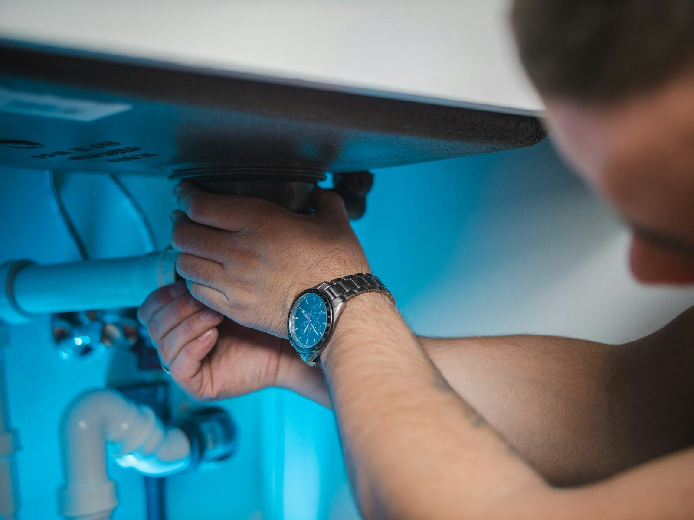

Not every water heater problem is an emergency, but the ones that are get more expensive with every minute. The most common one is a ruptured tank. Because the cold inlet stays connected to a failed tank, the leak does not end when the heater is empty; it often keeps running until someone closes a valve, soaking subfloors, carpet, and ceilings below. Other urgent signs include a relief valve that is spraying or discharging repeatedly, which means the tank is running too hot or at too much pressure, a sudden jump to scalding water at the tap, and a rotten-egg odor near a gas unit. For households in Winter Haven, FL, any of these is worth a call right now rather than a wait-and-see approach.
Here is the order that keeps people safe. Gas comes first. If there is any smell of gas, get everyone out, leave light switches and outlets alone, and call the gas utility or 911 once you are outside; the heater can wait until the utility says the home is safe. Second, water. Turn the cold-water valve above the heater clockwise until it stops, or close the home's main shutoff if that valve will not budge. Third, energy. Set a gas control to OFF, or turn off the breaker for an electric heater, but only if you can reach the panel without standing in water. A relief valve that is releasing water should never be capped or plugged. With the heater isolated, call (863) 204-4944 and we can talk through what you are seeing.
A calm voice on the phone helps more than people expect. When you call (863) 204-4944, we help you confirm the water and energy are off, suggest what to move out of the water's path, and dispatch a technician as fast as the day allows, with a straight answer about timing. On arrival, the priorities are safety, diagnosis, and a clear explanation. Worn relief valves, weeping drain valves, rotted dielectric fittings, dead thermocouples, and failed elements are the usual culprits, and we stock them so the fix rarely waits on an order. A tank that has corroded through is the exception, since the only real fix is a new heater, and we lay out those options honestly. Save our number now so you have it before you need it in Winter Haven.
What homeowners call us about most is Water Heater Repair in Winter Haven. Start there if you're not sure what you need.

Signs You Need Emergency Water Heater Repair in Winter Haven
Recognizing the warning signs early can save you money and keep a slow drip from turning into a flooded utility room. Keep an eye out for the following:
- Signs of scorching or backdrafting around the base or top of a gas heater
- Sudden loud knocking or boiling sounds coming from inside the tank
- A rotten-egg smell near a gas water heater (leave first, and call the gas utility)
- An electric water heater that keeps tripping its circuit breaker
- Water or steam coming from the temperature and pressure relief valve or its discharge pipe
- A puddle under the tank that keeps growing
- Hot water far hotter than normal, a sign of a runaway thermostat or gas control
- A complete loss of hot water throughout the house
Small Symptoms, Big Consequences
Most water heater failures start small: a popping sound from sediment, a damp spot under the drain valve, or a shower that goes lukewarm a few minutes sooner each week. Don't wait. Get Winter Haven Water Heater on the phone at (863) 204-4944 and we'll get a technician scheduled.
Talk to Us About Emergency Water Heater Repair
Call our team for pricing today.
Get Help: (863) 204-4944Your Emergency Water Heater Repair Questions Answered
What a Trained Technician Brings to the Job
It is tempting to treat a leaking or dead water heater as a quick fix. In reality, you may be dealing with standing water beside 240-volt wiring, a gas supply and open burner a few inches from a puddle, and a tank of very hot water under pressure. The relief valve, if it is firing, is the last safeguard between an overheated tank and a violent failure, and plugging it is one of the most dangerous things anyone can do to a heater. Relighting a pilot while gas lingers, or cranking on a corroded fitting until it snaps, can make things much worse. Leave, shut off, and call is the right sequence for anyone without the tools and training.
A trained technician brings the right order of operations and the right parts. Our team confirms the heater is isolated, tests for gas leaks with a detector and soap solution instead of relying on a sniff test, checks household water pressure and thermal expansion when a relief valve has been discharging, and inspects the vent for proper draft before a gas unit is restarted. Just as important, we tell you honestly when a heater can be repaired and when it cannot. A leaking seam or rusted-through bottom cannot be fixed, while a failed valve, fitting, or element usually can, and the difference is often a few hundred dollars versus a new heater. You get that answer before any work begins.
Our Emergency Water Heater Repair Process
Good water heater work comes down to a consistent routine, and ours starts with a real diagnosis instead of a guess. Here's how we handle emergency water heater repair from start to finish:
Safety Call & Shutoff Guidance
We start on the phone: confirm there is no gas odor, help you close the cold supply and turn off gas or power, and talk through what to move out of the water's path.
Secure the Area
You get a straight answer on timing, not a promise we cannot keep. Once on site, we check the shutoffs, the gas or electrical supply, and the vent before touching the heater itself.
Find the Failure, Fix It
The source gets pinpointed before any part is replaced. Relief valves, drain valves, connectors, thermocouples, and elements are stocked, so most fixes happen the same visit.
Safe Restart
Before we leave, the tank is refilled and bled of air, the burner or elements are brought back online, and we confirm dry connections, a working relief valve, and a safe 120F setting.
Repair or Replace? Let's Figure It Out.
Tell us the age, fuel type, and symptoms, and we'll help you sort out the next step.
Tap to Call (863) 204-4944Tips to Keep Your Water Heater Healthy
Routine maintenance is almost always cheaper and easier than an early replacement. Follow these tips from our technicians:
- Ask about a drain pan and drain line, especially for heaters in attics, closets, or above finished rooms
- Keep boxes, paint, gasoline, and cleaning products well away from a gas water heater
- Lift the relief valve lever once a year to confirm it opens and reseats, and call if it keeps dripping
- Tag the water heater supply valve and the main shutoff so nobody has to search during a leak
- Set the temperature around 120F, which protects against burns and slows tank wear
- Annual flushing keeps sediment from causing the rumbling and hot spots that lead to leaks
- Consider an automatic leak shutoff that stops the cold supply the moment water hits the floor
DIY vs. Professional Emergency Water Heater Repair
Online videos may help in a pinch, yet lasting repairs and code-compliant installs depend on correct venting, proper relief valve discharge piping, and a trained technician. Here's a comparison:
| Consideration | DIY Attempt | Hiring a Pro |
|---|---|---|
| Gas Safety | Tempted to relight or poke around | Evacuate, utility clears it, then leak testing |
| Water Control | Seized valves forced until they break | Supply isolated fast, stuck valves handled safely |
| Relief Valve | Valve capped or plugged, a dangerous move | Pressure and expansion checked, valve replaced if worn |
| Electrical Hazard | Resetting breakers while the floor is wet | Circuit verified dead before any work |
| Finding the Cause | Guessing between valve, fitting, and tank | Leak and failure point pinpointed |
| Result | Temporary patch, risk of repeat flooding | Safe restart, verified dry and working |
Book a Visit Today
Every day a leak or a failing part goes unchecked puts more stress on the tank. Get Winter Haven Water Heater on the job today.
Call (863) 204-4944 NowEmergency Water Heater Repair Near Winter Haven
We serve Winter Haven and its neighboring towns for emergency water heater repair, from quick same-day repairs to planned installs.